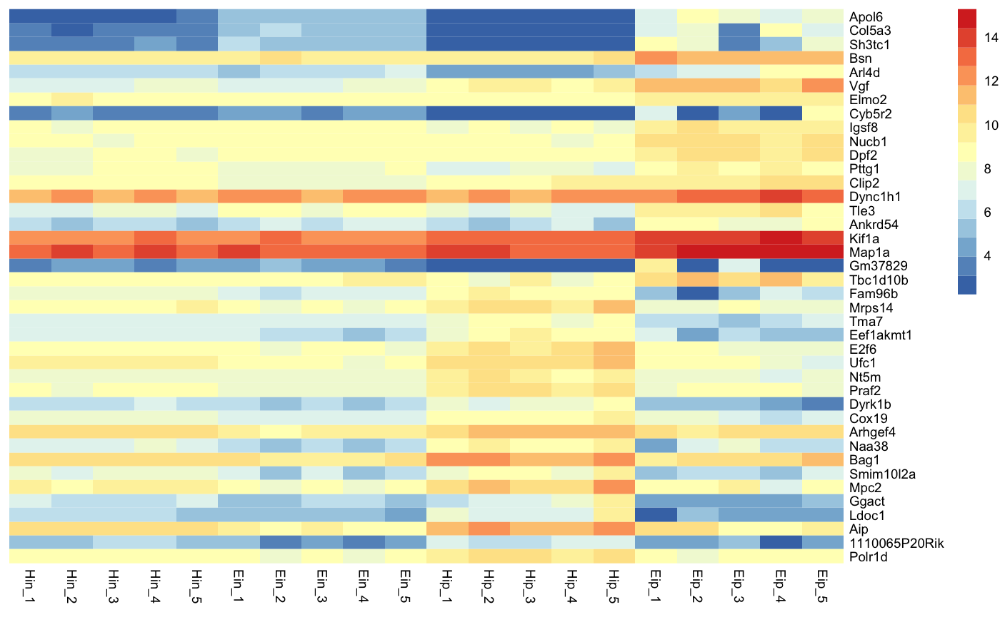
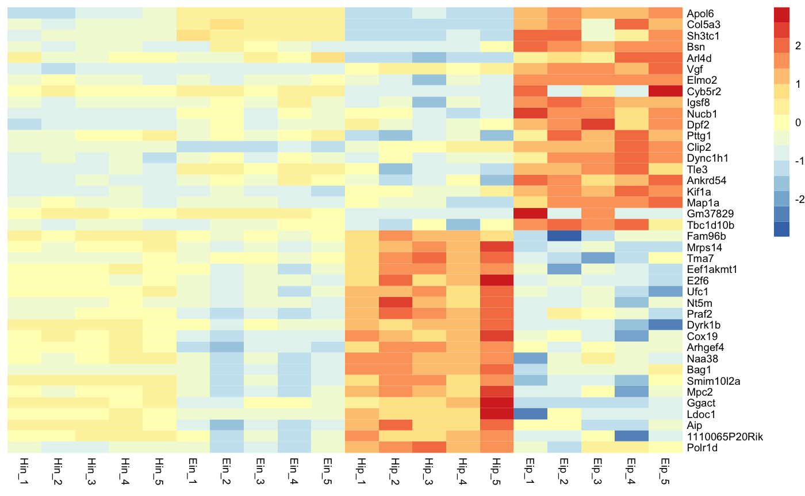
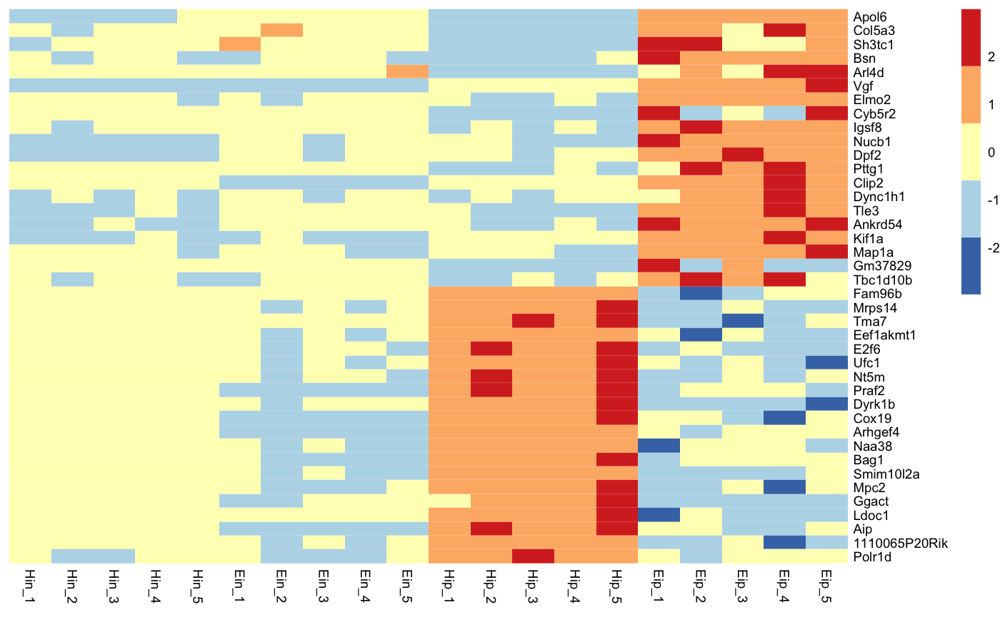
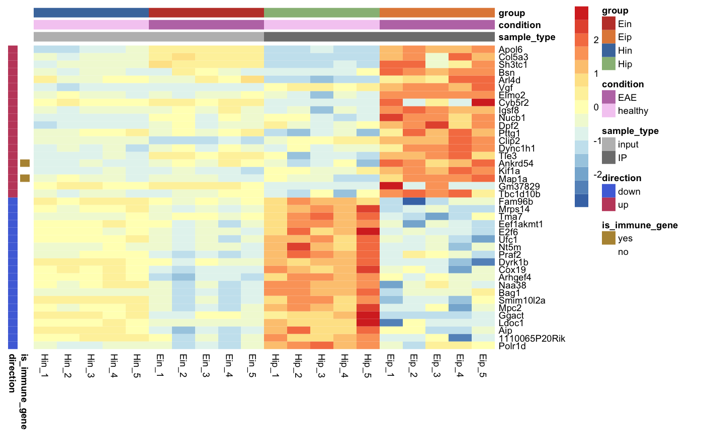
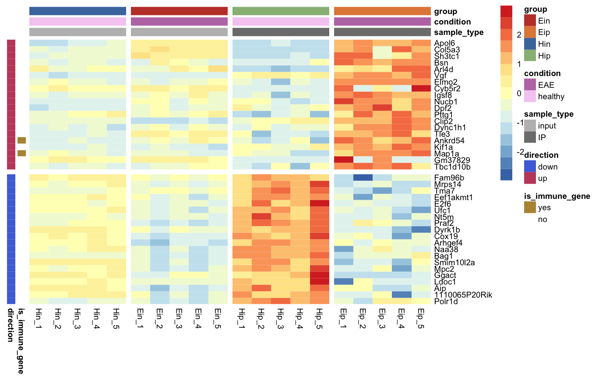

tidyheatmap provides a tidyverse-style interface to the powerful heatmap package pheatmap by @raivokolde. Although heatmaps can be generated via ggplot2::geom_tile(), it is hard to reach the versatility and beauty of a genuine heatmap function like pheatmap::pheatmap().
tidy_heatmap() requires tidy data in long format, see tidyverse.
As an example we will use the gene expression data set data_exprs. In the tidyverse lingo the columns of a data frame are called variables. One of these variables named expression contains the numeric values to be color-coded in the heatmap. Furthermore we will use the variables sample for heatmap columns and external_gene_name for heatmap rows.
data_exprs
#> # A tibble: 800 x 12
#> ensembl_gene_id external_gene_n… Eip_vs_Hip.padj direction is_immune_gene
#> <chr> <chr> <dbl> <chr> <chr>
#> 1 ENSMUSG0000003… Apol6 3.79e-28 up no
#> 2 ENSMUSG0000003… Apol6 3.79e-28 up no
#> 3 ENSMUSG0000003… Apol6 3.79e-28 up no
#> 4 ENSMUSG0000003… Apol6 3.79e-28 up no
#> 5 ENSMUSG0000003… Apol6 3.79e-28 up no
#> 6 ENSMUSG0000003… Apol6 3.79e-28 up no
#> 7 ENSMUSG0000003… Apol6 3.79e-28 up no
#> 8 ENSMUSG0000003… Apol6 3.79e-28 up no
#> 9 ENSMUSG0000003… Apol6 3.79e-28 up no
#> 10 ENSMUSG0000003… Apol6 3.79e-28 up no
#> # … with 790 more rows, and 7 more variables: count_type <chr>, group <chr>,
#> # replicate <chr>, expression <dbl>, sample <chr>, sample_type <chr>,
#> # condition <chr>
data_exprs %>% filter(external_gene_name == "Bsn") %>% select(external_gene_name, sample, expression)
#> # A tibble: 20 x 3
#> external_gene_name sample expression
#> <chr> <chr> <dbl>
#> 1 Bsn Hin_1 9.59
#> 2 Bsn Hin_2 9.48
#> 3 Bsn Hin_3 9.66
#> 4 Bsn Hin_4 9.62
#> 5 Bsn Hin_5 9.25
#> 6 Bsn Ein_1 9.55
#> 7 Bsn Ein_2 10.3
#> 8 Bsn Ein_3 9.98
#> 9 Bsn Ein_4 9.82
#> 10 Bsn Ein_5 9.47
#> 11 Bsn Hip_1 9.43
#> 12 Bsn Hip_2 9.40
#> 13 Bsn Hip_3 9.52
#> 14 Bsn Hip_4 9.26
#> 15 Bsn Hip_5 10.2
#> 16 Bsn Eip_1 11.9
#> 17 Bsn Eip_2 11.4
#> 18 Bsn Eip_3 11.1
#> 19 Bsn Eip_4 11.6
#> 20 Bsn Eip_5 11.5
glimpse(data_exprs)
#> Observations: 800
#> Variables: 12
#> $ ensembl_gene_id <chr> "ENSMUSG00000033576", "ENSMUSG00000033576", "ENSMU…
#> $ external_gene_name <chr> "Apol6", "Apol6", "Apol6", "Apol6", "Apol6", "Apol…
#> $ Eip_vs_Hip.padj <dbl> 3.793735e-28, 3.793735e-28, 3.793735e-28, 3.793735…
#> $ direction <chr> "up", "up", "up", "up", "up", "up", "up", "up", "u…
#> $ is_immune_gene <chr> "no", "no", "no", "no", "no", "no", "no", "no", "n…
#> $ count_type <chr> "vsd", "vsd", "vsd", "vsd", "vsd", "vsd", "vsd", "…
#> $ group <chr> "Hin", "Hin", "Hin", "Hin", "Hin", "Ein", "Ein", "…
#> $ replicate <chr> "1", "2", "3", "4", "5", "1", "2", "3", "4", "5", …
#> $ expression <dbl> 2.203755, 2.203755, 2.660558, 2.649534, 3.442740, …
#> $ sample <chr> "Hin_1", "Hin_2", "Hin_3", "Hin_4", "Hin_5", "Ein_…
#> $ sample_type <chr> "input", "input", "input", "input", "input", "inpu…
#> $ condition <chr> "healthy", "healthy", "healthy", "healthy", "healt…The basic layout of the heatmap relies on the parameters rows, columns and values. You can think of them like aesthetics in ggplot2::ggplot(), similar to something like aes(x = columns, y = rows, fill = values).

With the parameter scale you can activate data scaling for "row" or "column". By default data scaling is turned off scale = "none".
tidy_heatmap(data_exprs,
rows = external_gene_name,
columns = sample,
values = expression,
scale = "row"
)
Rows and columns in the heatmap will appear in the same order as in the tidy data frame used as input. For example, to order rows and columns alphabetically, just use the dplyr::arrange().
You can customize the number of colors color_scale_n and also the minimum and maximum values of the color legend, color_scale_min and color_scale_max.
tidy_heatmap(data_exprs,
rows = external_gene_name,
columns = sample,
values = expression,
scale = "row",
color_scale_n = 16,
color_scale_min = -2,
color_scale_max = 2
)
Of course, you can also replace the color legend altogether.
tidy_heatmap(data_exprs,
rows = external_gene_name,
columns = sample,
values = expression,
scale = "row",
colors = c("#161523","#1C1E4C","#2D3679","#3B4D98","#49569F","#69549D",
"#855097","#9E4F96","#CA5296","#DC5F8E","#E17872","#E58D63",
"#EDA962","#F5CA66","#F9E96C","#EEE969")
)
#> Warning in if (is.na(colors)) colors <- rev(RColorBrewer::brewer.pal(n = 7, :
#> Bedingung hat Länge > 1 und nur das erste Element wird benutztAnnotations can be added for both rows and columns via ann_row and ann_col, respectively. Just specify the corresponding variables in the tidy data frame. If you want more then one variable for annotation just combine them by c(var1, var2, var3).
You can provide a list of named vectors to take control over the annotations colors ann_colors.
ann_colors <- list(
condition = c(EAE = "#BD79B4", healthy = "#F5CEF2"),
group = c(Ein = "#C14236", Eip = "#E28946", Hin = "#4978AB", Hip = "#98BB85"),
sample_type = c(input = "#BDBDBD", IP = "#7D7D7D"),
direction = c(down = "#5071DC", up = "#C34B6B"),
is_immune_gene = c(yes = "#B69340", no = "#FFFFFF")
)
tidy_heatmap(data_exprs,
rows = external_gene_name,
columns = sample,
values = expression,
annotation_col = c(sample_type, condition, group),
annotation_row = c(is_immune_gene, direction),
scale = "row",
color_scale_n = 16,
color_scale_min = -2,
color_scale_max = 2,
annotation_colors = ann_colors
)Gaps can be added by specifying data frame variables that should be used to generate the gaps. Only one variable can be chosen for gaps_row and one for gaps_col.
tidy_heatmap(data_exprs,
rows = external_gene_name,
columns = sample,
values = expression,
annotation_col = c(sample_type, condition, group),
annotation_row = c(is_immune_gene, direction),
scale = "row",
color_scale_n = 16,
color_scale_min = -2,
color_scale_max = 2,
annotation_colors = ann_colors,
gaps_row = direction,
gaps_col = group
)
You can fix the cell dimensions via the cellwidth and cellheight parameters.
tidy_heatmap(data_exprs,
rows = external_gene_name,
columns = sample,
values = expression,
annotation_col = c(sample_type, condition, group),
annotation_row = c(is_immune_gene, direction),
scale = "row",
color_scale_n = 16,
color_scale_min = -2,
color_scale_max = 2,
annotation_colors = ann_colors,
gaps_row = direction,
gaps_col = condition,
cellwidth = 7,
cellheight = 7
)
There are even more features like clustering and dendrograms implemented in pheatmap::pheatmap(). All parameters that are not directly evaluated by tidy_heatmap() will be automatically passed to pheatmap::pheatmap().
tidy_heatmap(data_exprs,
rows = external_gene_name,
columns = sample,
values = expression,
annotation_col = c(sample_type, condition, group),
annotation_row = c(is_immune_gene, direction),
scale = "row",
color_scale_n = 16,
color_scale_min = -2,
color_scale_max = 2,
annotation_colors = ann_colors,
cellwidth = 7,
cellheight = 7,
cluster_rows = TRUE,
cluster_cols = TRUE
)tidy_heatmap() takes the tidy data frame and the additional arguments and does the data wrangling needed to satisfy pheatmap::pheatmap(). By setting return_data = TRUE you can get a glimpse at the result of the data wrangling.
All the credit for the heatmap functionality goes to @raivokolde, the creator of the brilliant pheatmap package. tidyheatmap just provides a convenient interface to use pheatmap in the tidyverse ecosystem.